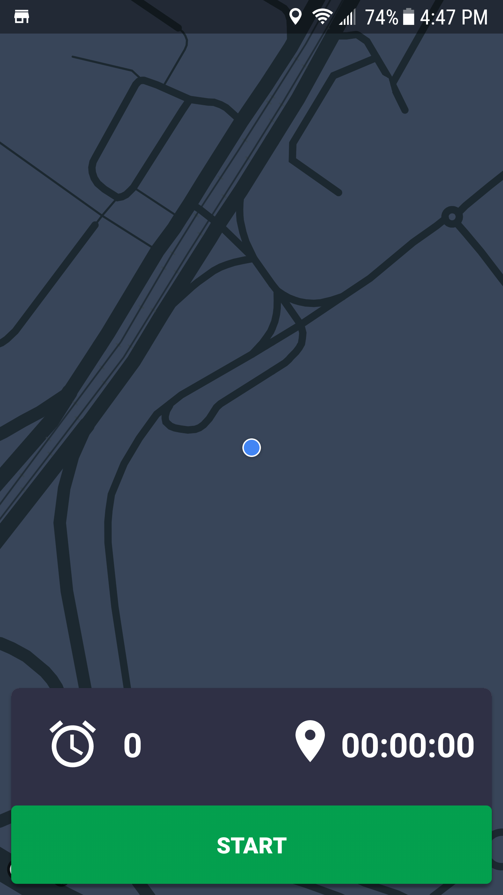
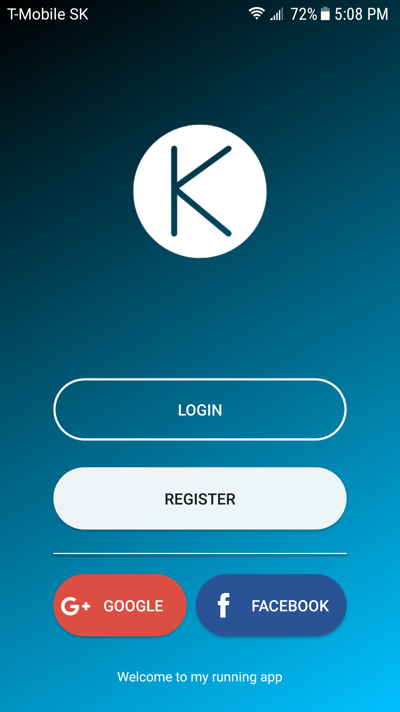
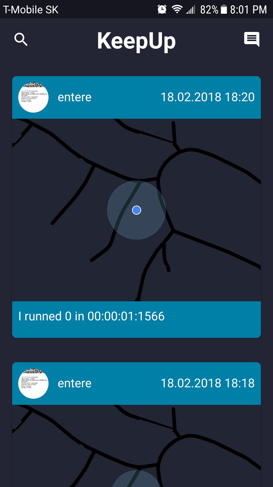

This is my personal project. It's basically app for runners where they can track all their progress. I wanted to create this project simply because I wanted to learn something new. I had always feeling that if you want something you need to put work in. So I decided to learn Android simply by developing this app. And it end up pretty well.
In this app I used GoogleMaps Api. It was first time for me to get in touch with some Api.
I never wondered it will be so interesting. It's great that someone created something great and
you can simply use it in your app. When I finnished messing up with GoogleMaps I had feeling
that this app in order to be special need something more.
I decided I will use Firebase database for storing users and all they runs. When I created login
I thought that login also need some upgrade so I implemented Google and Facebook login.


Next challenge for me was figure out how to show runs of users. When It did I was wandering
what can I do next. I decided I will create small social app which will consist from runs of
users I follow. So I end up with something what is very close to social application with
everything what social app should have.
Next step for me will be implementation of chat. So users can communicate with each other.
My goals for this app is to finish everything to perfection so I will be able to share it on
app store. I always want to create something what people can actually use daily. I know there
is lots of apps for runners but I hope my design and simple user interface will attract some
users.
You can find code on my github of on this link.
Feel free to fork and contribute this project.
There still lots of work which need to be done.
